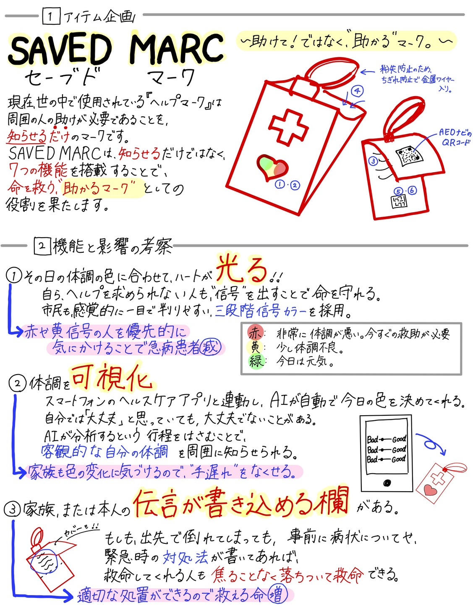
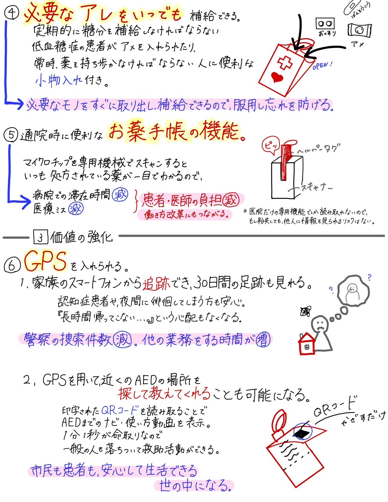

未来のアイテム企画『SAVED MARK』
祖父の体調不良をきっかけに企画しました。
『家族に迷惑をかけたくない』と思いがちな高齢者や、心身が不自由な人を支えるための道具です。
現行の『ヘルプマーク』は、“助けを求める”側のサインで終わってしまい、
“助けたい”という周囲の思いやりまでは、十分に伝わらないように感じていました。
IOTの力で、誰もが安心して暮らせる、誰一人取り残されない社会を目指して機能を考えました。
いつか『SAVED MARK』が実現されることを願っています

